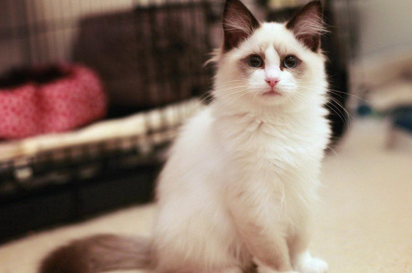

布偶猫会舔洗和梳理一身中等长度的丝状毛发。如果要给它们梳理毛发的话可以抱着用钢针排梳梳理，使它们举止优雅。
布偶猫善于讨好主人，总是形影不离地围着主人转，这种猫喜静，但也爱玩玩具，并喜欢参与家中的日常生活。
布偶猫是一个晚熟的品种，它们的毛色至少要到2岁才会足够丰满，而体格和体重则要至少4岁才能发育完。刚出生的幼猫全身是白色的，一周后幼猫的脸部，耳朵，尾巴开始有颜色变化，直到2岁时被毛才稳定下来，直到3-4岁才完全长成。[3]
布偶猫是猫，是猫总会掉毛，只是布偶掉的不严重而已。宠物掉毛多是温度问题，如果全年温度控制在21~22左右，能有效缓解这个问题。
 |
 |